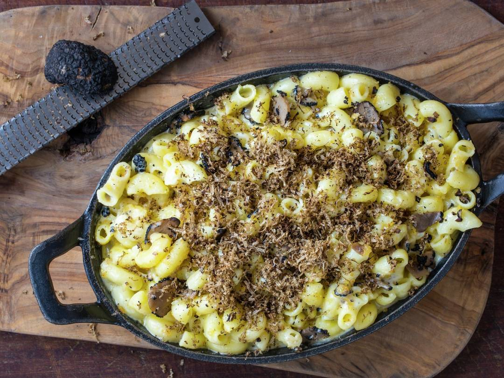

Truffle Mac and Cheese

Ingredients
- 1 litre whole milk
- ¼ onion
- 2 garlic cloves, peeled and left whole
- 1 bay leaf
- 1 star anise
- 100g butter
- 100g plain flour
- 100g comté cheese, grated
- 100g mature cheddar cheese, grated
- 500g dried macaroni
- 2 x 150g mozzarella balls, drained and sliced or torn into pieces
- 30g parmesan, grated
- sea salt and freshly ground black pepper
Cooking Instructions
- Pour the milk into a saucepan, then add the onion, garlic cloves, bay leaf and star anise
- Bring almost to the boil, then remove from the heat, cover and set aside to infuse for 30 minutes
- Strain into a jug and discard the flavourings
- Preheat the oven to 200°C/180°C fan/Gas 6
- Melt the butter in a separate saucepan over a low heat, then stir in the flour to make a roux and cook, stirring, for 1 minute
- Gradually whisk in the warm infused milk, until the mixture is smooth
- Slowly bring to the boil over a low heat, whisking continuously, until the sauce thickens
- Simmer gently for 5 minutes, stirring often
- Add the Comté and Cheddar cheeses and whisk in until smooth
- Season to taste with salt and pepper
- While the sauce is cooking, cook the macaroni in a large pan of salted boiling water until al dente, about 9 minutes or according to the packet instructions
- Drain, refresh briefly under cold running water and drain again
- Meanwhile, make the breadcrumb topping
- Melt the butter in a frying pan, add the garlic and sauté for a minute without colouring
- Stir in the breadcrumbs and cook over a low heat for about 8 minutes, until the breadcrumbs are pale golden and lightly toasted, stirring regularly to make sure the mixture doesn’t burn
- Stir in the parsley
- Tip the macaroni into the cheese sauce and mix well to coat
- Pour the mixture into a large, wide gratin dish
- Scatter the mozzarella on top, then sprinkle over the Parmesan. Sprinkle the toasted breadcrumbs over the top
- Bake for about 15–20 minutes, until the topping is golden and crisp
- Shave the black truffle on top and serve
Home